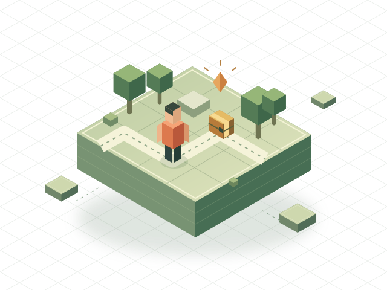

Gameplay & interactions
Game loops, progression, quests, and the little interactions that bring a world to life.
From the first interaction to the systems behind it. Thoughtful Luau scripting for worlds worth playing.

Every great game starts with a loop.
01 / SELECTED WORK
A closer look at the systems behind the play.
Illustrative projects — replace with your own work.
02 / WHAT I BUILD
Gameplay that feels right.
Systems that make sense.
Game loops, progression, quests, and the little interactions that bring a world to life.
Characters with a purpose. State-driven behavior, dialogue, and responsive world interactions.
Connect what players see to what the game does, with clear client and server responsibilities.
-- A little about the builder
local Developer = {
name = "YourName",
platform = "Roblox",
focus = {
"Thoughtful gameplay",
"Clear architecture",
"The small details",
},
}
return Developer03 / BEHIND THE CODE
Hi, I'm YourName. I turn game ideas into playable systems on Roblox. I care about how an interaction feels, how the code fits together, and how easy it is to keep building.
My approach is simple: understand the game, define the scope, and make progress visible. A good handoff should make the next step easier.
Sample bio · add your story, specialties, and profile links.04 / THE PROCESS
Talk through your game, the system you need, and what a successful result looks like.
Agree on deliverables, milestones, budget, and the parts that are out of scope.
Review playable progress, share feedback, and test the important edge cases.
Receive the agreed source files, setup notes, and an explanation of how the pieces fit.
05 / YOUR NEXT PROJECT
Let's figure out what makes it work.
Start with a few details about your idea.
Roblox programmer
I write code for Roblox games, mostly on the backend.
I like working from a GDD. Send yours over and we can talk about the systems your game needs.
01 / Portfolio
Empty project template
A short description of what the project does and what you built.
A space for your work.
02 / GDD
Share the document, references, and the current state of the game.
We'll go over what the systems need to do and how they connect to the rest of the game.
We'll confirm the requirements, price and timing before starting.
Have something in mind?
Send it over. I'd like to read what you're building.